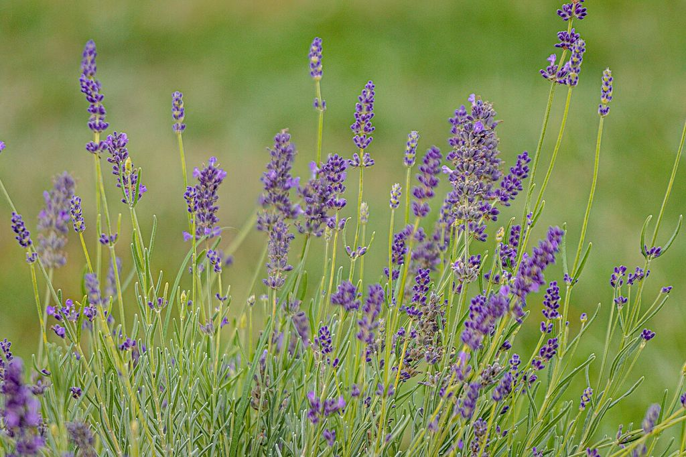

Cikk · Levendula
Levendula és szorongás: az illata jólesik, de a szorongást ne csak rá bízd
Ha nyáron jártál Tihanyban, biztos érezted: a levendulamezők illata szinte magától lelassít. Ma a levendula ott van a párnaspray-kben, az illóolajokban és a „nyugtató” kapszulákban is. Utánanéztem, mennyit bír el ebből a tudomány. A rövid válasz az, hogy van némi biztató jel, de a szorongást ne csak egy illóolajra bízd.

Honnan jön, és mire árulják?
A levendula örökzöld, illatos növény, a Földközi-tenger vidékéről származik. A neve a latin „lavare”, vagyis mosakodni szóból ered, és nem véletlenül: évszázadok óta tesznek belőle fürdőbe, parfümbe, szappanba. Ma szájon át szedhető étrend-kiegészítőként főleg szorongásra és stresszre ajánlják, de népszerű az illatterápiában és a bőrre kenhető termékekben is.
Átolvastam az amerikai NIH komplementer és integratív egészségügyi központjának (NCCIH) levenduláról szóló lapját, amelyet 2025 februárjában frissítettek.
Mit mond a NIH a szorongásról?
Amit a lap ír Néhány vizsgálat szerint egy szájon át szedett levendulaolajos készítmény talán segíthet szorongásban, akkor is, ha mellette lehangoltság is van. A kutatásoknak viszont komoly korlátai vannak: kevés résztvevővel készültek, nem mindig független a finanszírozásuk, és a résztvevők köre sem elég sokszínű.
Amit az illatról ír Nem világos, hogy a levendulaolajos illatterápia segít-e szorongásban, stresszben, lehangoltságban, fájdalomban vagy alvási gondokban. Egyesek azt mondják, jobban érzik magukat tőle, de ez még nem bizonyíték.
A lap szerint a szájon át szedett kapszula vagy a levendulatea előzetes, kis vizsgálatokban talán enyhítette a lehangoltságot, de ezt óvatosan kell kezelni. A bőrre kent levendula a lehangoltságra nem tűnt hatásosnak.
Amire figyelj
Ételekben szokásos mennyiségben a levendula valószínűleg biztonságos. A kapszulák rövid távon, a vizsgált adagokban talán rendben vannak, de okozhatnak hasmenést, fejfájást, hányingert vagy böfögést. Az illóolaj belélegezve fejfájást vagy köhögést okozhat, a bőrre kent termék pedig egyeseknél allergiás bőrreakciót.
Elvileg felerősítheti a nyugtatók és altatók hatását, ezért ha ilyet szedsz, vagy műtét előtt állsz, előbb beszélj az orvosoddal. Terhesség és szoptatás alatt keveset tudunk a biztonságáról.
Szerintem nyugodtan tegyél egy levendulás zacskót a párnád mellé, ha jólesik. De ha a szorongás hetek óta a mindennapjaidat irányítja, az nem illóolaj-kérdés. Ilyenkor kérj segítséget a háziorvosodtól vagy egy pszichológustól, mert erre vannak jól bevált kezelések.
Források
- National Center for Complementary and Integrative Health, NIH. Lavender: Usefulness and Safety. Frissítve: 2025. február. https://www.nccih.nih.gov/health/lavender
- Donelli D, Antonelli M, Bellinazzi C, Gensini GF, Firenzuoli F. Effects of lavender on anxiety: a systematic review and meta-analysis. Phytomedicine. 2019;65:153099. https://doi.org/10.1016/j.phymed.2019.153099 · PubMed 31655395